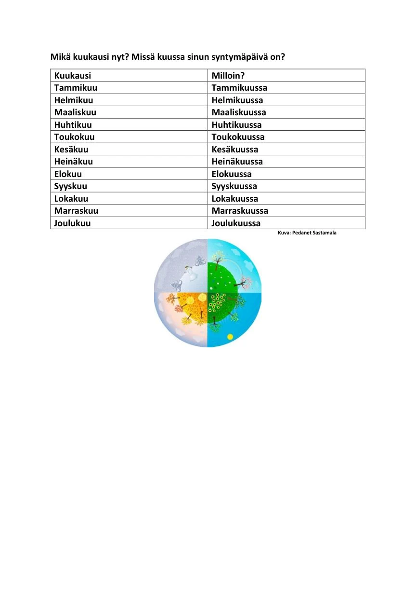
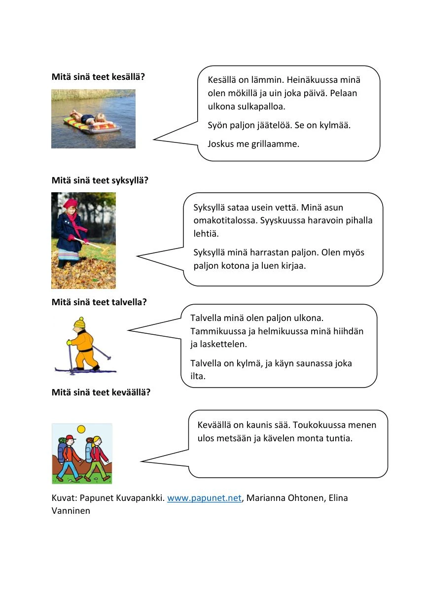
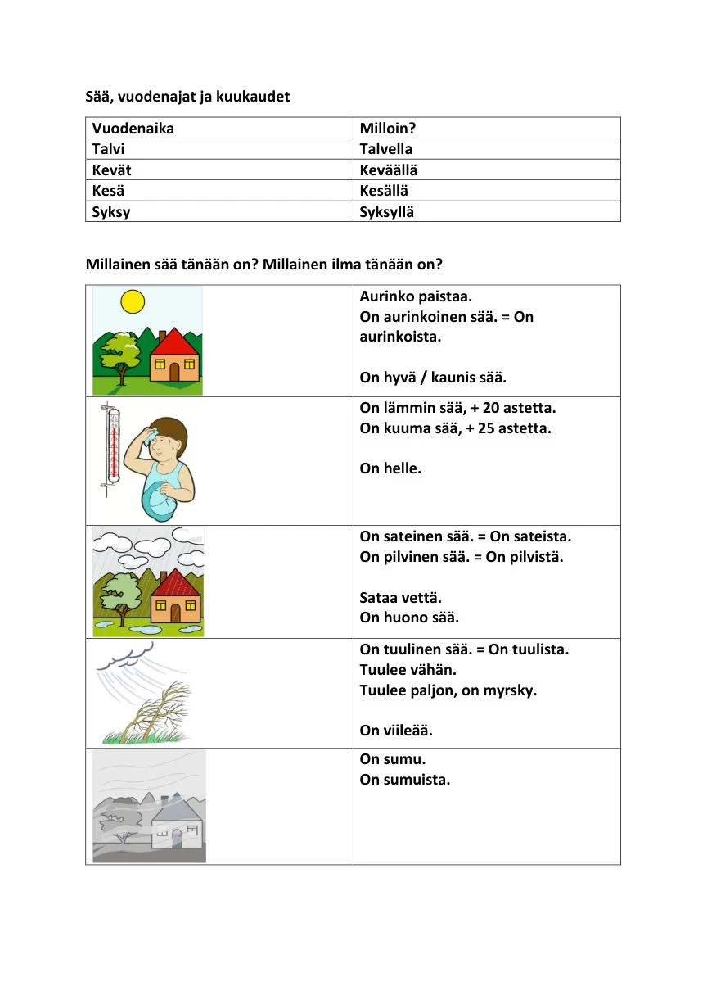
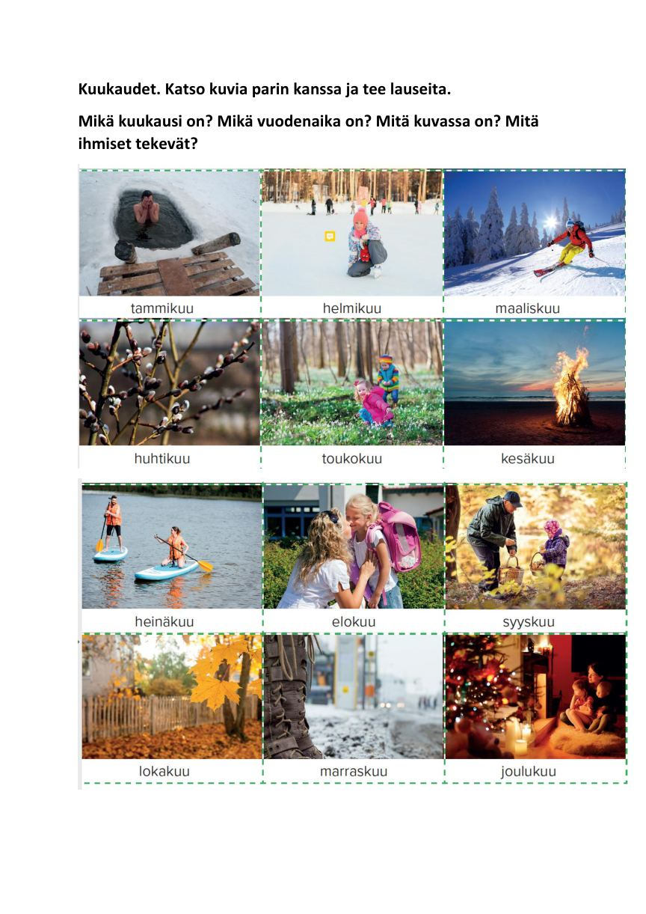

K200DJ99 芬兰语2 · 第 02 / 13 讲
第 2 讲 · 天气、季节与月份
Weather, Seasons and Months
所属章节：第 1 章 自我介绍与日常时间
资料来源 · 4 项 / 已附 0 项
03_Tunti 2/1_Milloin, Vuodenajat ja kuukaudet.pdf未附原文件03_Tunti 2/2_Keskustele Kuukaudet.pdf未附原文件03_Tunti 2/3_Millainen sää on.pdf未附原文件03_Tunti 2/4_Sataa.pdf未附原文件
未附文件仅列原始名称；版本与核对日期由维护者登记。
本节定位
第二讲把话题从「我是谁」推到「外面怎么样、现在几月」。它看起来只是词汇课，实际上第一次系统展示了芬兰语的两个结构性习惯：时间地点用「格」而不是介词（talvella、tammikuussa），以及形容词作谓语时可能要用部分格（On sateista）。
本讲之后，第 3 讲会把时间格细化到钟点与星期，第 4 讲再把这些时间短语用于谈计划。因此本讲的重点是先把「季节 -lla、月份 -ssa」这套记忆锚点打牢，后面只是往里加同类。
学完本节你应当能够：
- 用
Millainen sää on?与Millainen ilma on?问天气，并给出五种以上天气答句 - 解释并正确使用
On aurinkoista与On aurinkoinen sää这两种结构 - 说清
sataa只以第三人称单数出现的原因，并搭配vettä / lunta / räntää / rakeita - 把四季写成 -lla 形式、把十二个月写成 -ssa 形式，并用它们回答
Milloin? - 区分「天气形容词」与「天气名词」两类句子的构成，不混用词尾
2.1 本讲的三个话题与一条主线
Tunti 2 的四份材料分工很清楚：1_Milloin, Vuodenajat ja kuukaudet 给四季与十二个月的时间格形式；2_Keskustele Kuukaudet 是看图造句的口语活动；3_Millainen sää on 是天气问答卡；4_Sataa 专门讲一个动词的多义与惯用法。
主线是：芬兰语没有「在冬天」「在五月」这样的介词短语，而是给名词换词尾。四季用 -lla（talvella、kesällä），月份用 -ssa（tammikuussa）。同一个「在……」，两类词用两个不同后缀，这是本讲最需要背下来的分工。
2.2 天气问句与两套答句
问天气有两个几乎等价的问法：Millainen sää tänään on?（今天天气怎么样？）与 Millainen ilma tänään on?（今天天色怎么样？）。sää 偏「天气状况」，ilma 偏「天、空气」，日常可以互换。
回答时有两套结构，务必分清：
| 结构 | 例句 | 构成说明 |
|---|---|---|
| 形容词 + sää（名词在） | On aurinkoinen sää. / On sateinen sää. / On pilvinen sää. | sää 作主语，形容词用主格并与 sää 一致：aurinkoinen、sateinen、pilvinen、tuulinen、sumuinen |
| 省略主语 + 形容词部分格 | On aurinkoista. / On sateista. / On pilvistä. / On tuulista. / On sumuista. | 主语被省略，形容词用部分格：-inen → -ista/-istä |
| 固定短语 | On hyvä sää. / On kaunis sää. / On lämmin sää. / On kuuma sää. / On kylmä sää. | 品质形容词直接修饰 sää，用主格 |
| 温度 | On lämmin sää, +20 astetta. / On kuuma sää, +25 astetta. / On pakkasta, miinus 20 astetta. | 零上直接用 + N astetta；零下用 On pakkasta + miinus N astetta |
| 特殊天气名词 | On helle. / On sumu. / On ukkosta ja salamoi. | helle = 酷暑；sumu = 雾；ukkonen 打雷时用部分格 ukkosta |
| 动词句 | Aurinko paistaa. / Sataa vettä. / Tuulee vähän. / Tuulee paljon, on myrsky. | 用动词直接描述动作，见 2.3 |
为什么省略主语时形容词要变部分格？因为此时句子的意思是「（天气）是晴朗的（一种状态）」，被陈述的不是一个完整的、可数的个体，而是一种不可数的状态量，芬兰语用部分格标记这种「部分 / 不定量」的谓语。类似结构还有 On kylmä（很冷）、On viileää（有点凉）、On lämmin（暖和）。注意 On kylmä 与 On kylmää 都能听到，前者把「冷」当成一个整体状况，后者强调「冷的感觉弥漫着」，课程材料两种都给，考试一般两者都接受。
2.3 sataa：一个只能用于第三人称的动词
芬兰语描述「下雨 / 下雪」不用「天」作主语，而用一个无人称动词 sataa。它的完整变位在材料里也给了：minä sadan, sinä sadat, hän sataa, me sadamme, te sadatte, he satavat。但材料同时指出：实际只用第三人称单数，而且不加主语，例如 Ulkona sataa（外面在下雨）。
sataa 本身不说明「下什么」，要说明就得加部分格宾语：
| 表达 | 含义 | 格的使用 |
|---|---|---|
| Sataa. | 下雨 / 下雪（不指明） | 单独使用，凭窗看就知道是什么 |
| Sataa vettä. | 在下雨 | vesi → vettä（部分格） |
| Sataa lunta. | 在下雪 | lumi → lunta（部分格） |
| Sataa räntää. | 在下雨夹雪 | räntä → räntää |
| Sataa rakeita. | 在下冰雹 | rae → rakeita（部分格复数） |
| Sataa vettä ja lunta. | 雨夹雪（另一种说法） | 两个部分格并列 |
| Sataa kissoja ja koiria. | 下倾盆大雨（直译「下猫下狗」） | 惯用语，仿英语 |
| Sataa ukkoja ja akkoja. | 下大雨（旧说法，直译「下老头老太太」） | 惯用语 |
| Sataa puukkoja. | 下大雨（直译「下刀子」） | 惯用语 |
| Sataa rahaa. | 钱来得容易（直译「下钱」） | 惯用语 |
| Sataa tähdenlentoja. | 流星很多 | 惯用语 |
| Sataa onnitteluja. | 收到一大堆祝贺 | 惯用语 |
这条惯用语线索很有用：sataa 的语义核心是「从天上往下落」，所以凡是「大量涌来」的东西都能「下」。反过来说，看到 Sataa + 部分格 就要意识到这不是「下雨」而是「某物大量落下」。
Taivas sataa（天空下雨）或 Se sataa（它下雨）。直接 Sataa 开头即可，这与英语 It is raining 的 it 不同。2.4 其他天气动词与固定搭配
Aurinko paistaa.—— 太阳在照（paistaa 也可用于「烤肉」）。Tuulee vähän.—— 有点风；Tuulee paljon, on myrsky.—— 风很大，有暴风雨。On pakkasta.—— 天寒地冻（pakkasta 是部分格，固定搭配）。On ukkosta ja salamoi.—— 打雷又闪电（ukkonen 的 partialukkosta；salamoida 用于闪电）。On helle.—— 酷暑（芬兰夏季超过 25 度即称 helle）。On sumu. / On sumuista.—— 有雾 / 雾蒙蒙。On viileää.—— 凉爽（viileä 的部分格）。
温度读法：+20 astetta 读作 plus kaksikymmentä astetta，-20 astetta 读作 miinus kaksikymmentä astetta。astetta 是 aste 的部分格单数，因为温度是量、不是可数个体。
2.5 四季：为什么用 -lla
四季的时间格一律是 -lla/-llä：
| 季节 | Milloin 形式 | 英文 |
|---|---|---|
| talvi（冬） | talvella | in winter |
| kevät（春） | keväällä | in spring |
| kesä（夏） | kesällä | in summer |
| syksy（秋） | syksyllä | in autumn |
-lla 的本义是「在……表面上 / 在……这种活动里」。把季节理解成一段「时间表面」，就顺理成章地用 -lla。同理，一天中的时段也用 -lla：aamulla（早上）、päivällä（白天）、illalla（晚上）、yöllä（夜里）。而 viikonloppuna 例外地用 -na（第 3 讲详述）。
材料里的示范段落正是把这些格串起来：Kesällä on lämmin. Heinäkuussa minä olen mökillä ja uin joka päivä.（夏天很暖。七月我在木屋，每天游泳。）注意 mökillä 也用 -lla，因为木屋被看成「待在上面的地方」。
2.6 十二个月：为什么用 -ssa
十二个月一律用 -ssa/-ssä，而且月份词本身都以 -kuu（月）结尾：
| 月份 | Milloin 形式 | 英文 |
|---|---|---|
| tammikuu | tammikuussa | in January |
| helmikuu | helmikuussa | in February |
| maaliskuu | maaliskuussa | in March |
| huhtikuu | huhtikuussa | in April |
| toukokuu | toukokuussa | in May |
| kesäkuu | kesäkuussa | in June |
| heinäkuu | heinäkuussa | in July |
| elokuu | elokuussa | in August |
| syyskuu | syyskuussa | in September |
| lokakuu | lokakuussa | in October |
| marraskuu | marraskuussa | in November |
| joulukuu | joulukuussa | in December |
月份用 -ssa 的理由与季节不同：月份被视为一个「容器」，事件发生在月份内部，所以是内格。这一点与第 1 讲的 Lahdessa 同源。四季用 -lla、月份用 -ssa，这条分工必须背成条件反射，因为考试里 Milloin olet syntynyt? 的标准答句就是 Olen syntynyt huhtikuussa（我四月出生）。
顺带记住月份的构词逻辑，比死背十二个词省力：tammi（橡树年轮心材）、helmi（珍珠，二月雪珠）、maalis（三月融雪泥）、huhti（四月焚烧开荒）、touko（五月播种）、kesä（夏）、heinä（干草，七月割草）、elo（收获，八月）、syys（秋）、loka（泥泞，十月）、marras（冻土，十一月）、joulu（圣诞）。
2.7 Milloin 问答与「做什么」的搭配
问「什么时候」用 Milloin?，回答直接把时间词放在句首或句尾，不需要介词：Milloin sinä olet syntynyt? — Olen syntynyt tammikuussa.；Milloin on suomen tunti? — Tiistaina.（星期用 -na，见第 3 讲）。
把季节与活动连起来时，注意动词搭配：Uin joka päivä（我每天游泳）、Pelaan ulkona sulkapalloa（我在户外打羽毛球，pelata 后面接部分格 sulkapalloa）、grillaamme（我们烧烤）、haravoin pihalla lehtiä（我在院子里耙树叶，haravoida + 部分格复数 lehtiä）、hiihdän ja laskettelen（我滑雪和滑雪橇）、käyn saunassa（我去桑拿，käydä + -ssa）。
Keväällä kävelen metsässä monta tuntia.（春天我在森林里走好几个小时。）2.8 大小写与书写规范
芬兰语中星期、月份、季节全部小写：maanantai、tammikuu、kesä。句首才大写。这与英语 Monday / January / Summer 的习惯相反，写作题里写错会扣分。国名、城市名、语言名照常小写（suomi、suomea），只有标题、专名首字母大写。
On sateinen. 缺主语。要么 On sateinen sää，要么 On sateista。kesässä 是错的，应为 kesällä；把月份写成 -lla：tammikuulla 也是错的，应为 tammikuussa。天气有两套答句，别混：On aurinkoinen sää 里形容词随 sää 用主格；省略主语就说 On aurinkoista，-inen 变 -ista/-istä，sateinen→sateista、pilvinen→pilvistä。写 On sateinen. 缺主语是高频错误。sataa 是无人称动词，只用第三人称且不加主语：Ulkona sataa，不能造 Taivas sataa；要说明下什么就接部分格——Sataa vettä / lunta / rakeita，语义核心「从天上大量落下」还衍生 Sataa kissoja ja koiria（倾盆大雨）。时间格分两个阵营：四季用 -lla（talvella, keväällä, kesällä, syksyllä），月份用 -ssa（tammikuussa … joulukuussa），写 kesässä 或 tammikuulla 都错。月份词都以 -kuu 结尾，构词有线索：heinäkuu 割草、elokuu 收获、marraskuu 冻土。温度 +20 astetta 里 astetta 是部分格，因为温度是量；星期、月份、季节一律小写。
原版图页（源 PDF 插图页）







| Suomi | 中文 | English 说明 |
|---|---|---|
| sää | 天气 | Weather: Millainen sää on? |
| ilma | 天、空气 | Air or weather; interchangeable with sää in small talk. |
| Millainen … on? | ……怎么样？ | What kind of … is it? |
| aurinkoinen | 晴朗的 | Nominative adjective with sää: On aurinkoinen sää. |
| aurinkoista | 晴朗（部分格谓语） | Partitive predicate without a subject: On aurinkoista. |
| sateinen / sateista | 下雨的 | Rainy; the -inen form agrees with sää, the -ista form stands alone. |
| pilvinen / pilvistä | 多云的 | Cloudy. |
| tuulinen / tuulista | 有风的 | Windy. |
| sumuinen / sumuista | 有雾的 | Foggy. |
| sataa | 下雨 / 下雪 | Impersonal verb, only 3rd person singular, no subject. |
| lumi → lunta | 雪（部分格） | Sataa lunta = it is snowing. |
| vesi → vettä | 水（部分格） | Sataa vettä = it is raining. |
| räntä → räntää | 雨夹雪 | Sataa räntää = it is sleeting. |
| rae → rakeita | 冰雹 | Sataa rakeita = it is hailing. |
| pakkasta | 零下、严寒 | On pakkasta = it is freezing. |
| helle | 酷暑 | On helle = it is very hot (over 25 °C). |
| talvella, kesällä | 冬天、夏天 | Seasons take the adessive -lla. |
| tammikuussa | 一月（内格） | Months take the inessive -ssa. |
解：第一句用名词结构：Tänään on aurinkoinen sää. 也可以用省略主语的形容词结构：Tänään on aurinkoista. 第二句：On plus kahdeksantoista astetta.
要点：18 = kahdeksantoista（8 + toista）；astetta 是部分格，因为温度是量。
Kesässä sataa paljon vettä.解：两处错。季节不用 -ssa，改为 kesällä。整句：Kesällä sataa paljon vettä.
思路迁移：看到「季节 + 格」先查是不是 -lla；看到 sataa 后面的名词先查是不是部分格（vettä 正确，lunta、räntää 同理）。
Milloin olet syntynyt?，设定生日是 1999 年 11 月 3 日。解：月份用 -ssa：marraskuussa。年份用 vuonna 1999（vuonna = vuosi 的样格，固定说法）。完整答句：Olen syntynyt marraskuussa vuonna 1999.
要点：olen syntynyt 是「出生」的固定完成形式，作为整块记住即可，第 12 讲会说明它的构成来源。
Syksyllä sataa usein vettä. Minä asun omakotitalossa.解：第一句：季节 -lla（syksyllä）+ 无人称动词（sataa）+ 频率副词（usein）+ 部分格宾语（vettä）。第二句：内格（omakotitalossa = 独栋房子里），因为「住在某建筑内部」用 -ssa。
对比：季节 -lla 与建筑 -ssa 在同一段里并存，正说明芬兰语的格由名词的语义类别决定，不由汉语的「在」决定。
- 把四季与十二个月分别写成 -lla 与 -ssa 形式，各造一句
Milloin …?的答句。 - 用三种天气结构各写一句：名词句（sää）、省略主语句（部分格）、动词句（sataa / tuulee / paistaa）。
- 翻译：「冬天下很多雪，我每天晚上去桑拿。」
- 改错：
Kesässä on lämmin sää./On sateinen./Sataa lumi./On pakkanen. - 写一段 4 句的短文：说明你最喜欢的季节、那个季节的天气、你在那个季节做什么。
答案与思路
1. 季节：talvella, keväällä, kesällä, syksyllä；月份：tammikuussa … joulukuussa。答句示例：Kesällä minä uin järvessä. / Joulukuussa on paljon lunta.
2. 名词句：On tuulinen sää. 部分格句：On pilvistä. 动词句：Ulkona tuulee paljon. 或 Aurinko paistaa.
3. Talvella sataa paljon lunta, ja käyn saunassa joka ilta. 注意 lunta 部分格、joka ilta 不加格（joka 后面的时间词用原形）。
4. Kesässä → kesällä；On sateinen. → On sateinen sää. 或 On sateista.；Sataa lumi. → Sataa lunta.；On pakkanen. → On pakkasta.
5. 示例：Minun lempivuodenaika on syksy. Syksyllä on viileä ja sateista. Minä kävelen metsässä ja haravoin lehtiä. Illalla luen kirjaa kotona. 自检每句的时间词是否用了正确的格。
Millainen sää on? 的两套答句、sataa + 部分格。听力与口语都直接考这些短语。sataa 后面忘掉部分格：sataa lumi、sataa vesi 都错。sataa 加主语：Se sataa、Taivas sataa 都不成立。Sataa kissoja ja koiria、Sataa rahaa 这类惯用语解释「sataa 表示大量落下」的语义机制。天气与时间表达清单
说天气三步
- 选结构：有 sää 用主格形容词；无主语用部分格形容词；有动作动词直接用第三人称单数
- 形容词部分格：-inen → -ista/-istä
- 温度：plus / miinus + 数词 + astetta
- 降水：sataa + vettä / lunta / räntää / rakeita
说时间两步
- 季节与时段的词先换成 -lla：kesällä、illalla、aamulla
- 月份换 -ssa：tammikuussa、huhtikuussa
- 星期换 -na：maanantaina（第 3 讲）
| 源文件 | 位置 | 覆盖知识点 |
|---|---|---|
| 03_Tunti 2/1_Milloin, Vuodenajat ja kuukaudet.pdf | p1–p4 | 四季 -lla、天气句型、十二个月 -ssa、季节活动段落 |
| 03_Tunti 2/2_Keskustele Kuukaudet.pdf | p1 | 看图造句任务：Mikä kuukausi / vuodenaika on? Mitä ihmiset tekevät? |
| 03_Tunti 2/3_Millainen sää on.pdf | p1 | 天气问答卡标题与口语任务形式 |
| 03_Tunti 2/4_Sataa.pdf | p2–p6 | sataa 的变位与限定用法、部分格搭配、六条惯用语 |
| （补充） | 2.2、2.5 | 形容词谓语部分格的理据、-lla 与 -ssa 的语义分工属解释性拓展 |
| （跳过） | — | 3_Millainen sää on 的 p2–p12 为纯图片页，无文字语言点；图片素材不入讲义 |